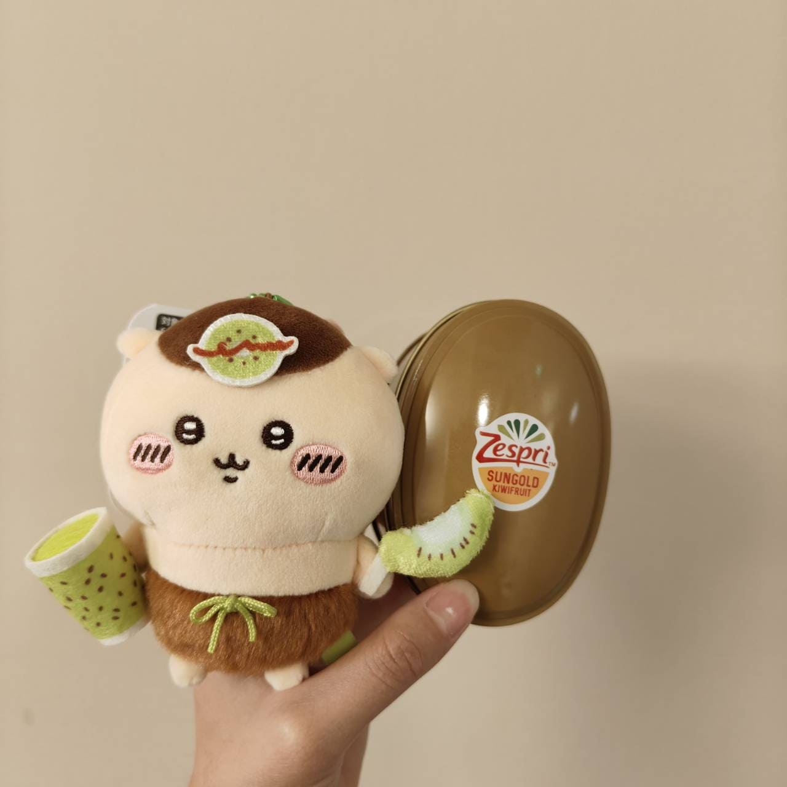
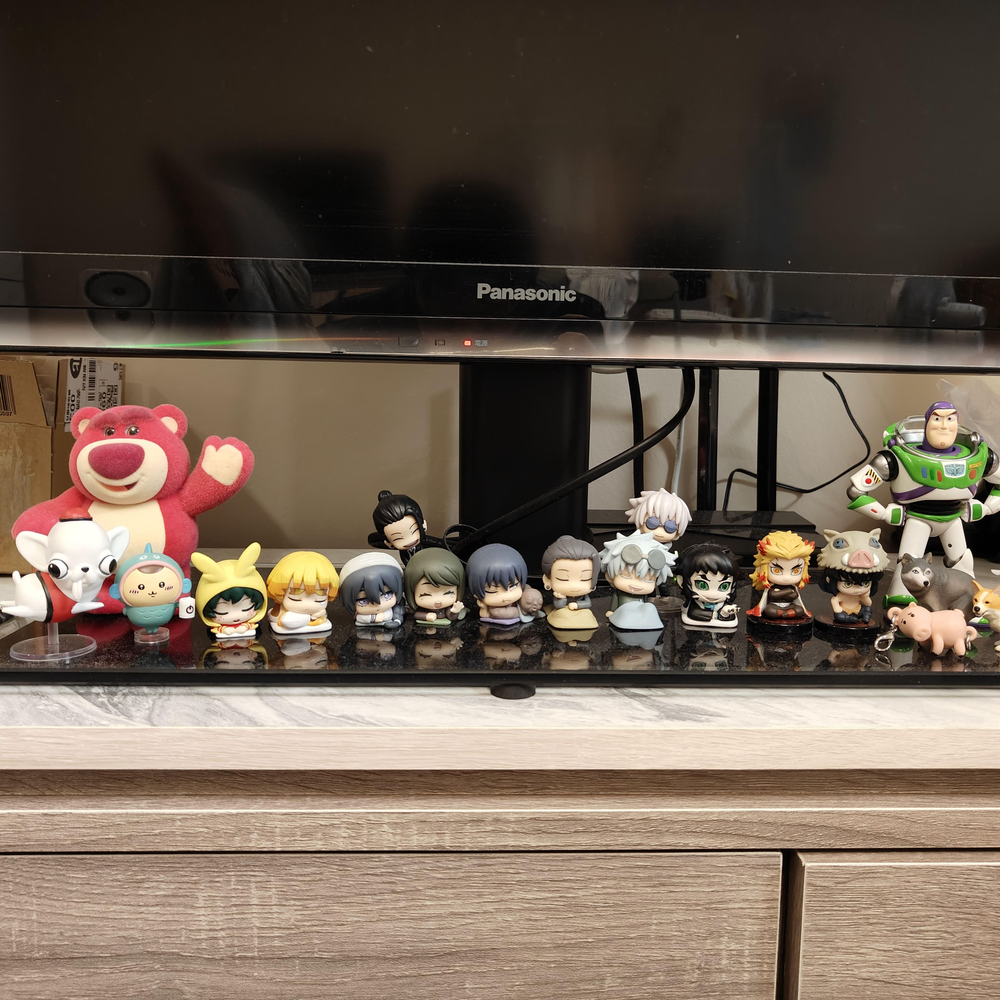
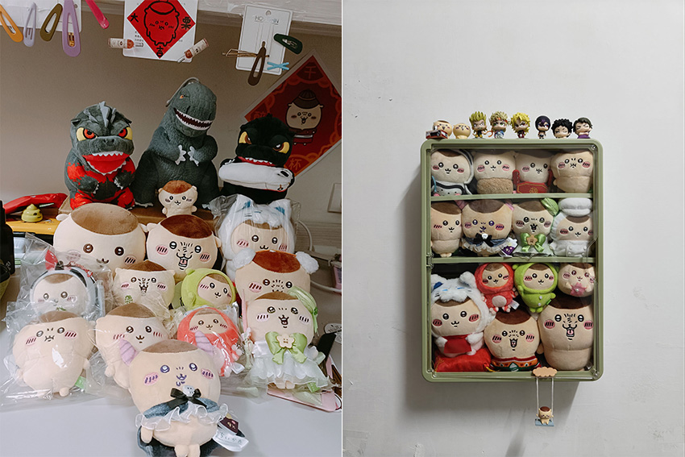
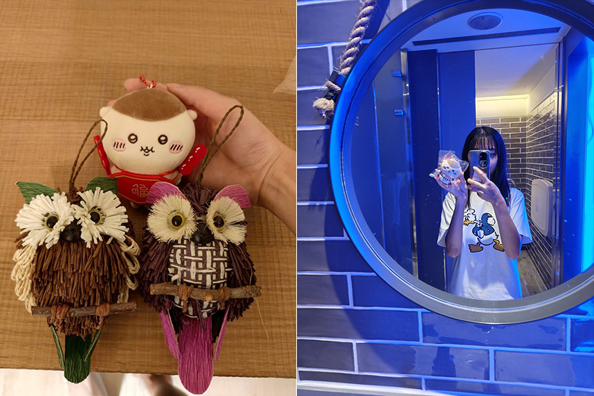
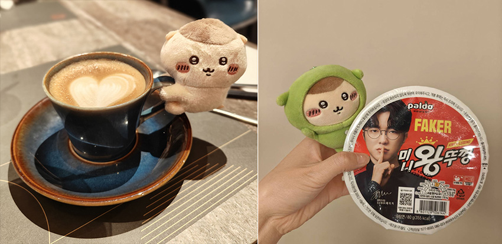
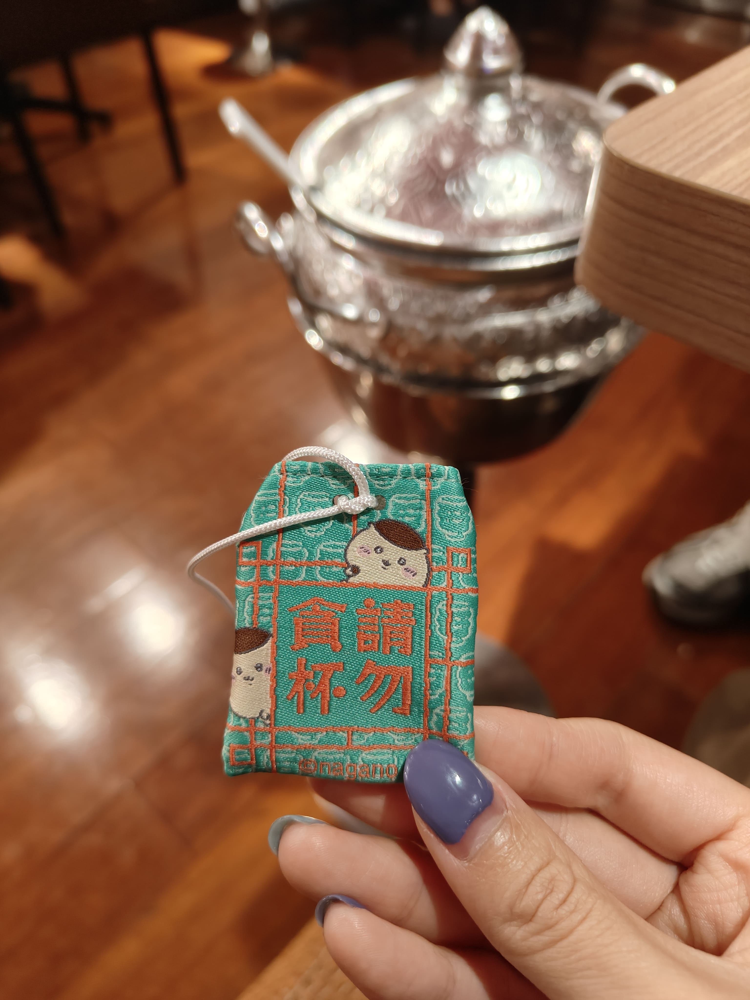
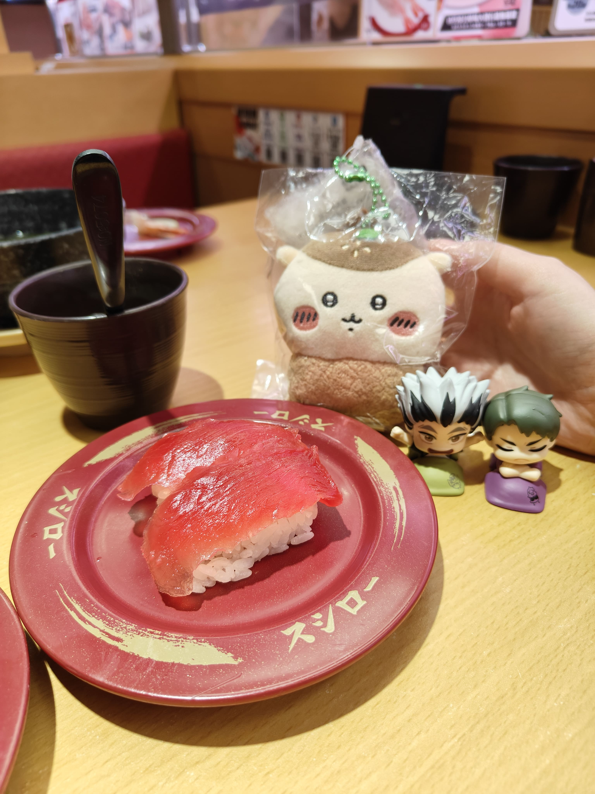

|
說到「栗子饅頭」，首先想起的或許是軟軟糯糯，香甜可愛的菓子，但我要介紹的並非甜食，而是「吉伊卡哇」裡的角色，也就是粉絲們口中的「栗子大叔」。  我本身對可愛的娃娃、吊飾類有著近乎執著的收集興趣。前陣子被社群軟體瘋狂推播吉伊卡哇相關內容，讓我不禁好奇，如此火紅的動畫究竟有何種魅力，能吸引這麼多人的喜愛。隨意瀏覽一些動畫片段後，發現自己對這位大叔魔性的「登的愣、登的愣」出場 BGM、牛飲後的「哈～」，以及極具特色的平頭給擄獲了。從此，我的收藏清單又增加一項專屬項目—栗子饅頭。  起初，我還堅持別買吊飾和娃娃，只收集劇照。孰料，自收到第一隻初始栗子後，我開始「下單不手軟」的不歸路，每天泡在 FB 吉伊卡哇交易社團，物色有眼緣的各種栗子，並且開啟帶著娃娃到處旅遊、到處拍照的興趣。  去年春節期間，到日月潭旅遊，捎上新年栗子同行，和當地寓意「吉祥、守護」的報喜靈鳥合照，期盼新的一年有美好的事情會發生；到美食之都的台南時，帶上餐廳栗子吃遍在地美食；獲得拉花時，夾上栗子讓整杯咖啡增添甜味；以及好不容易找到 Faker 泡麵時，讓動作微微相似的睡衣栗子與他合照，對整個構圖更加友好。這些照片看似簡單，卻記錄了許多旅程中的小樂趣與珍貴回憶。   當然，如果僅是看他可愛、聲音很憨就喜歡，未免有些單薄。於是我進一步了解栗子饅頭的動物原型—蜜獾。生活在非洲、西亞等草原地區，霸佔金氏世界紀錄「世界上最無所畏懼的動物」多年，人狠話不多，人生格言「走過路過沒怕過」的「平頭哥」。因眼睛構造，讓他看誰都和他一般大，也因他極致優異的恢復能力和特殊的皮肉分離構造，釀就他一股子傲氣與對峙的本錢。看事物的角度、極聰慧的學習能力等，都是我想要效法的，屬實是越看越喜愛。  吉伊卡哇裡的栗子饅頭也是一樣，也許打架並不擅長，但是一位可靠的前輩，樂於分享、善於享受生活、勤奮努力，就像是真實世界的牠—勇往直前，不畏挑戰。 對於沒有收藏習慣的人而言，湊齊整組整堆的相似物品很難以理解，但就我的「栗饅」收藏而言，每多一隻周邊，都表示我達成了某個目標，替生活留下一個標記。微小的勝利有了微小的具現，更多的收藏表示更多的進步。每一次的攜娃出遊，也意味著眼界和回憶的創造與開闊，不單是簡單的塵封、觀賞，而是融入生活的美好。 因此，我也鼓勵大家培養屬於自己的興趣。也許是郵票、扭蛋、書籍，或是任何讓自己感到快樂的事物，都值得被珍惜。或許未來興趣會改變，收藏也可能因時間而增減，但當下那份單純的喜悅與成就感，始終是真實存在的。  以上就是我的栗子饅頭收藏故事，希望大家能在閱讀這篇文章時，欣賞照片中的栗子，更多認識、喜歡一點這個角色。如果因此找到屬於自己的收藏樂趣，那就更好不過了！ |
栗子饅頭帶著走
黃靖淳│Server台灣營運處＼關務課